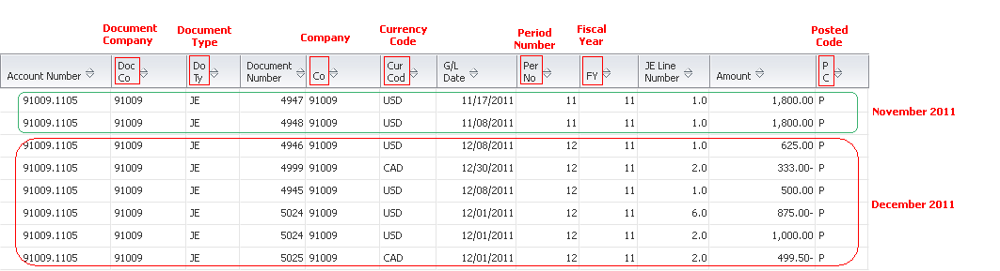

This document is intended for both Technical and Finance Functional users who will be involved in the summarization of general ledger data in EnterpriseOne system.
Details
Overview
To increase disk space, you can summarize, delete, or purge information from the system. Programs that summarize records create a single record. This record summarizes your transactions and replaces numerous detailed transaction records. This is followed by running programs that will purge the original detail records being summarized.
Program Functionality
You can use the Summarize Transactions program (R09811) to summarize journal entries and replace numerous detailed records with a single record. The Summarize Transactions program processes all posted F0911 records (POST = 'P') for summarization selected through processing options. This program will bypass accounts that fall under the GLSMxx AAIs and also accounts that fall under the GLRCxx AAIs and are not reconciled. During summarization, the report :
Creates a summarized record for each accounting period, ledger type, account id, currency code, subledger, or subledger type with following attributes:
Document Type field (DCT) = 'BF'.
Document Number (DOC) populated with the next numbers setup for base company 00000 and document type 'BF'.
Document Company (KCO) = '00000'.
General Ledger Date (DGJ) populated with the period-ending dates.
Posting Edit Code (POST) = 'P'.
Reference 1 field (R1) = 'R09811'
Batch Rear End Posted Code field (BRE) = 'P'.
Marks the summarized detail records in the F0911.GLSUMM field with 'Y' (Summarized) and leaves the unsummarized records as blank (Not summarized).
The summarized records serve as an audit trail to the Account Balances (F0902) table, which is useful in the event where the Repost Account Ledger report (R099102) needs to be run for a year in which transactions have been purged.
Example
For the period of November 2011, December 2011, and January 2012, the records for cash account 91009.1105 contains the following records prior to summarization:

After running R09811, the records for cash account 91009.1105 contains the following records:
The records marked in yellow color are summarized BF document type records created for each period November 2011, January 2012 but two for December 2011 period since it has two different types of transaction currency code (USD and CAD) within the 12th period. Please note the following observations:-
*1 All the BF records being generated in a single run of R09811 report will have common next number (DOC) generated from the next numbers setup for base company 00000 and document type 'BF'.
*2 The G/L Date (DGJ) for each BF record will be the period ending date for which the detail records have been summarized. For example, for the detail records being summarized for period of November 2011, it has created BF record with G/L Date updated as last date of november i.e. 11/30/2011 and similarly for December 2011, it will be 12/31/2011.
*3 The value of JELN field in F0911 for each BF record will be incremented for each record depending upon the value of JE Line Number Increment processing option.
*4 The Amount generated for BF records will be the sum total of all the records by period, ledger type, currency code, subledger value.
NOTE: During the time between the creation of the summarized (BF) records by R09811 report and the purge (R09911) is run, the F0911 amounts for the summarized accounts are doubled (see example above) and hence any F0911-based reports on these accounts will be incorrect during that time. So it would be required to run the purge after summarization to have the correct amounts reflected in F0911 and avoid any integrity issues.
Setup
Prerequisites
Back up the Account Ledger (F0911) table.
Determine the fiscal year, companies, and ledger types that you want to summarize. It would be advisable to estimate the record count in F0911 (by company, period) that needs to be summarized with the help of Database Administrator. This will help in laying out a successful execution plan.
Setup a test environment with replica of production data before summarizing the live data directly.
To ensure adequate processing time, summarize transactions after business hours.
For each ledger type that you want to summarize, verify that the Summarize Ledger Types option is selected in the Ledger Type Rules program (P0025). To access this form, run Ledger Type Master Setup (P0025). Then on the Work with Ledger Types form, highlight the ledger type and choose Job Cost rules from the Row menu.
Reconcile accounts falling under GLRCxx AAIs, if necessary.
AAI Setup
Following AAI items control the account ranges that are summarized or bypassed:
GLSMxx
The AAI items GLSMxx define account ranges that you do not want to summarize. For example, if you do not want liquid asset accounts summarized, you might set up this account range. You must define complete ranges, consisting of a beginning and an ending AAI item. The first range must begin with GLSM01. We recommend that you end the first range with GLSM02, which is the next consecutive number. Define the next range, if needed, to begin with GLSM03 and end with GLSM04, and so on. This table shows the information needed to set up AAI item GLSMxx:
AAI Item
Description
Business Unit (Not used)
Object (Required)
Subsidiary (Optional)
Sequence Number
GLSM01
Bypass Summarization Accounts
NA
1000
Blank
1.300
GLSM02
Bypass Summarization Accounts
NA
1199
99999999
1.300
GLRCxx
The AAI items GLRCxx define ranges of accounts that you want to reconcile as part of your account reconciliation process. You must reconcile these accounts before you can summarize them. The Reconciled field must have a value from user defined codes (09/RC) to allow summarization. The unreconciled accounts falling under GLRCxx AAIs will be left unprocessed for summarization. You must define complete ranges, consisting of a beginning and an ending AAI item. The first range must begin with GLRC01. We recommend that you end the first range with GLRC02, which is the next consecutive number. Define the next range, if needed, to start with GLRC03 and end with GLRC04, and so on. This table shows the information needed to set up AAI item GLRCxx:
AAI Item
Description
Business Unit (Not used)
Object (Required)
Subsidiary (Optional)
Sequence Number
GLRC01
Reconcilable Ranges
NA
2000
Blank
1.400
GLRC02
Reconcilable Ranges
NA
2100
99999999
1.400
NOTE: Both GLSMxx and GLRCxx AAIs are optional to setup for summarization. Each AAI can be setup for specific company. If not setup for specific company, it will look for default company 00000.
Processing Options
1. Number of Periods to Retain
Specify the number of periods that you want the system to retain in detail.
The system recognizes each year as having 14 periods, regardless of how the date pattern is defined in the Company Constants file (F0010). For example, if the current period is March 2012, to retain detail records going back to the beginning of Jan 2008, 59 periods (4 years x 14 periods per year plus 3 periods in 2012) need to be retained, so enter 59 in the processing option.
If you enter 01, the system retains only the current period of current fiscal year.
If you want to retain information only for the current fiscal year, for example, if you are in the fourth period of a fiscal year and you want to retain information from periods 2, 3, and 4 of the current fiscal year, enter 03 as the number of periods to retain in the processing option.
Default of blank will process all the records for summarization starting from inception until the current period for company.
In case one needs to retain more than 99 periods, its recommended to toggle the current general ledger period and then run summarization. For example, if company's business started in Jan 2000, the current period is Jan 2012, and details need to be retained back to Jan 2002 (summarize data from Jan 2000 - Dec 2001), change the current period for the company to Jan 2007 and enter 71 periods in the processing option (5 years x 14 periods per year plus 1 period in 2007).
2. Company
Enter the company number of the records that you want the system to summarize. Enter a valid company number from the F0010 table.
Default of blank will select all companies for processing.
3. Business Unit
Enter the business unit of the records that you want the system to summarize. Enter a valid business unit from the F0006 table.
Default of blank will select all business units for particular company (if specified above) or all companies for processing.
4. Starting Account ID Range
Specify a starting account ID for the range of accounts that you want the system to summarize.
Enter a valid account ID from the F0901 table.
Default of blank will select all account ids less than and equal to the Ending Account ID Range.
5. Ending Account ID Range
Specify an ending account ID for the range of accounts that you want the system to summarize.
Enter a valid account ID from the F0901 table.
Default of blank will select all account ids greater than and equal to the Starting Account ID Range.
6. Subledger
Specify the subledger of the records that you want the system to summarize.
Default of blank will select all subledgers.
7. Subledger Type
Specify the subledger type of the records that you want the system to summarize. Enter a valid subledger type from UDC table 00/ST.
Default of blank will select all subledger types.
8. Ledger Type
Specify the ledger type of the records that you want the system to summarize. Enter a valid ledger type from the F0025 table.
Default of blank will select all ledger types.
9. JE Line Number Increment
Enter '1' to increment the JE Line Number for summarized record (BF) with the value 0.10.
Default of blank will Increment the JE Line Number with the value 1.00.
Data Selection
The Summarize Transactions program does not include data selection. To specify which transactions the system summarizes, you use processing options in conjunction with AAI items - GLSMxx and GLRCxx.
NOTE: Summarize Transactions report (R09811) has been redesigned as part of an enhancement in all releases except 8.9 release to speed up processing . Since there was no Bug created for 8.9, R09811 will continue to function in 8.9 release as it did without the enhancement. Prior to this change, the only processing option was for 'Number of Periods to Retain' and the report data selection was available.
In all other releases of EnterpriseOne, Event rule processing was removed from the UBE and a business function was created (B0900247) to do the processing previously handled by the Event Rules. The associated processing option template T09811 was also revised to include company, business unit, account id ranges, subledger, subledger type and ledger type for data selection and the report data selection is no longer available in this UBE.
Aside from these changes in how data is selected for processing, the functionality of R09811 remains unchanged.
This redesign is included in all releases starting with 8.11 and later without needing to apply an ESU.
Reviewing the Report
This report does not print any output of the update.
Post Summarization
After the system creates summarized records, you can:
Restate prior fiscal years, if necessary.
Delete or purge records for that year from the F0911 table.
Question 1: Why can report data selection not be specified while running summarization?
Answer 1: To improve the processing performance of the summarization program, event rules processing was removed from the UBE and a business function was created (B0900247) to do the processing previously handled by the Event Rules. The associated processing option template T09811 was also revised to include company, business unit, account id ranges, subledger, subledger type and ledger type for data selection and hence the report data selection is no longer available in this UBE. This is true for all releases of EnterpriseOne other then 8.9.
Question 2: Why does the R09811 report fail when run for a large number of records?
Answer 2: When the summarization UBE R09811 is run over 1,000,000 records in such a way that for each record separate BF record needs to be created, then the line number goes out of range since numeric over flow occurs. A new processing option "JE Line number increment" has been introduced so that the user has an option to increment the line number either by 0.1 or 1. Run the report with processing option set to '1' when run over huge data, as it will increment the JE line number with 0.1 and hence the overflow will not occur. The Processing Option JE Line Number Increment if set to '1' will expand the field to 999,999.9 number of rows inserted for BF document type in a single run. This is the max amount of records that the UBE can insert in a single run.
Question 3: What happens to the cumulative totals in Account Ledger Inquiry (P09200) after the summarization process?
Answer 3: The summarization has no effect on the cumulative totals since the system uses the period totals in the Account Balances table (F0902) to calculate the cumulative-period-ending-amount.
Question 4: Why Document Company KCO value is incorrect on the BF records, if an account is summarized involving multiple ledgers and companies?
Answer 4: Per latest design, the document company will be populated as 00000 for all summarized BF documents. The document company of a summarized document does not serve any future purpose and also when there are multiple documents with the same company to be summarized into one company then 00000 would be the right choice. This has also addressed the next number population of the document number based on the next number of the 00000 company. Hence if the user has setup the next number by fiscal year setup in the next numbers, then the entry should be present for the company 00000 instead of the specific company.
Question 5: How to retain the number of periods greater than 99 during summarization?
Answer 5: For example, a company's business started in Jan 2002 and the current period for company is Jan 2011. Its required to summarize the data from Jan 2002 - Dec 2002 in first run and retain the rest of information from Jan 2003 to Jan 2011. In this example, user needs to retain 113 periods (8 years (from 2003 to 2010) x 14 periods per year plus 1 period in 2011 = 113) in order to summarize the data only for fiscal year 2002. However, the processing option - "No of periods to retain" only allow up to 99 periods to retain and considering the current period of Jan 2002, the 99 periods to retain will imply data from Jan 2011 to Jan 2004. (7 years (from 2004 to 2010) x 14 periods per year plus 1 period in 2011 = 99). In this case, transactions entered on or before fiscal year 2003 will be summarized. Hence to retain upto fiscal year 2003, please consider the following options:
Option #1
In P0010, change the current fiscal year and period Jan 2010. Therefore, 99 periods (7 years (from 2003 to 2010) x 14 periods per year plus 1 period in 2010 = 99) will be able to retain transactions till Jan 2003. The program will summarize transactions entered on or before fiscal year 2002.
Option #2
In case you are not comfortable with opening prior year, you can update the F0911.GLSUMM = 'Y' for all transactions that are above 99 periods. This is because R09811 will not process F0911 records with the value SUMM='Y'. In this case, update transactions for the fiscal year 2003 i.e. Jan 2003 - Dec 2003. After running R09811 to summarize data for Jan - Dec 2002, revert the field SUMM back to blank. Please note that this needs to be done via SQL with help of an expert database administrator.